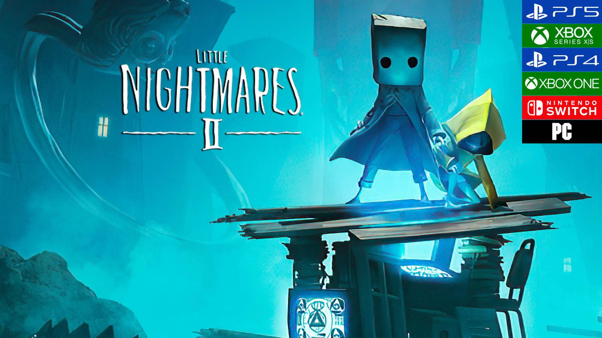
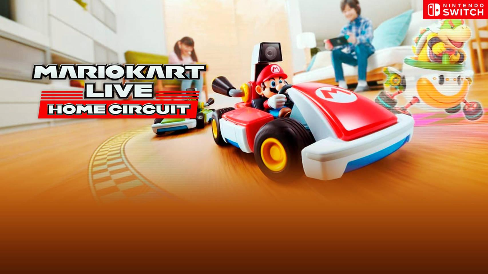

Little Nightmares 2 - PS4 Impreciones
Little Nightmares se ha convertido por derecho propio en uno de nuestros juegos de terror favoritos de esta generación que ya se encuentra dando sus últimos coletazos.
Una aventura que, si bien no era especialmente original en sus mecánicas, estaba fantásticamente diseñada y era capaz de crear una atmósfera perturbadora e incómoda con sabor propio, usando los miedos infantiles como principal fuente de inspiración.
Incluso escondía una buena historia tras una narración muy críptica, algo que no suele ser tan habitual en el género como nos gustaría. Ahora Tarsier Studios vuelve a la carga con una secuela prevista para el 11 de febrero de 2021, pero el equipo de desarrollo ha querido celebrar este Halloween con nosotros ofreciéndonos acceso a una nueva demo que nos ha dejado con los dientes bien largos y deseando que llegue el día en el que podamos echarle el guante a su versión final

Si hay algo que nos ha llamado la atención en este nuevo contacto es lo tremendamente fiel que es en su desarrollo a lo visto en el primer juego. Es decir, volvemos a estar ante una aventura de terror con un desarrollo muy lineal en la que deberemos avanzar por una serie de escenarios que tienen una escala gigantesca respecto al tamaño de nuestros personajes.
Mario Kart Live: Home Circuit
Una de las cosas que más nos gusta de Nintendo es su capacidad para crear nuevas y originales formas de jugar con experimentos de todo tipo. Unas veces salen bien y otras no tanto, pero es una compañía que no teme correr riesgos a la hora de lanzar ciertos productos al mercado. Un buen ejemplo de todo esto lo tenemos en Mario Kart Live: Home Circuit,
un sorprendente y llamativo videojuego que llegará el 16 de octubre en exclusiva para Switch y que promete combinar juguete físico, tecnología de realidad aumentada y la jugabilidad clásica de esta popular saga de carreras de karts.
